Установка ESHArio
ESHArio ставится с нашего сайта один раз. Дальше код приезжает с нашего сервера за секунды, при каждом открытии вебапа.
Нужен Google Chrome на Windows, Mac или Linux. ?
ESHArio ставится с нашего сайта один раз. Дальше код приезжает с нашего сервера за секунды, при каждом открытии вебапа.
Нужны Safari на iOS 16 или новее и приложение Userscripts. ?
ESHArio ставится с нашего сайта один раз. Дальше код приезжает с нашего сервера за секунды, при каждом открытии вебапа.
Нужны Firefox и дополнение Violentmonkey. ?
Установка: восемь шагов
- 1
Уберите прежний ESHArio и другие помощники
На странице chrome://extensions удалите прежний ESHArio и выключите другие расширения для FUT, иначе они мешают друг другу. Настройки сотрутся, покупка останется.
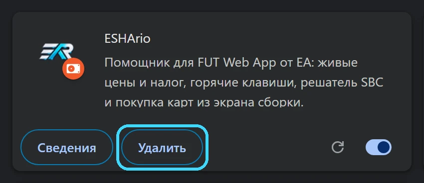
- 2
Скачайте архив
Нажмите кнопку ниже, архив ляжет в «Загрузки». Если Chrome спросит, нажмите «Сохранить».
- 3
Распакуйте архив
Chrome не открывает zip, ему нужна распакованная папка.
Правый клик по архиву, «Извлечь все». На Mac двойной щелчок. Положите папку в постоянное место, например в «Документы».
- 4
Откройте страницу расширений
Скопируйте адрес ниже, вставьте в адресную строку Chrome и нажмите Enter.
chrome://extensions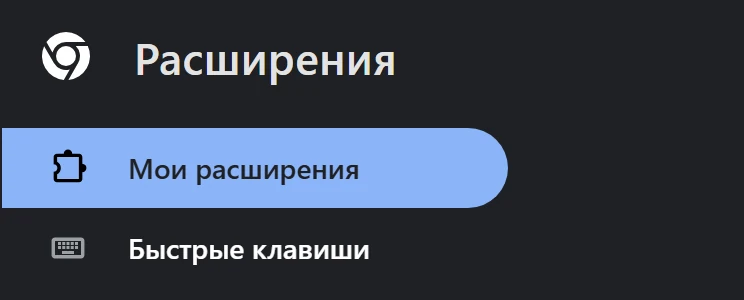
- 5
Включите «Режим разработчика»
Переключатель справа вверху. Он только разрешает ставить расширения из папки.
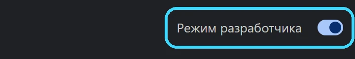
- 6
Нажмите «Загрузить распакованное расширение»
Выберите распакованную папку из третьего шага. ESHArio появится в списке.
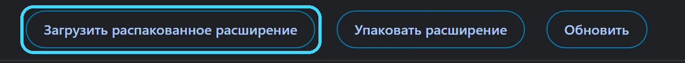
- 7
Закрепите значок ESHArio
Нажмите значок пазла справа от адресной строки, затем булавку у ESHArio.
- 8
Войдите в аккаунт
Нажмите значок ESHArio на панели Chrome и войдите почтой и паролем из письма о покупке.
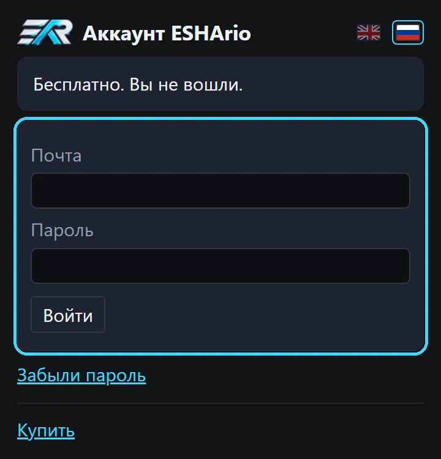
Если что-то пошло не так
Chrome предлагает отключить расширения
Если при запуске Chrome спросит «Отключить расширения в режиме разработчика?», нажмите «Отмена». Обычно такого окна нет.
Расширение выключилось само
Расширение выключилось само после перезапуска Chrome? Так делает Chrome с папкой из «Загрузок» или при выключенном режиме разработчика. Перенесите папку в постоянное место, например в «Документы», включите «Режим разработчика» и нажмите «Загрузить распакованное расширение» ещё раз. Наш код расширение не выключает.
Chrome предлагает удалить ESHArio?
Так Chrome помечает любое расширение, поставленное архивом: «Chrome не может проверить происхождение расширения». Нажмите три точки справа и «Оставить расширение». Пока включён режим разработчика, этот вопрос не появляется.
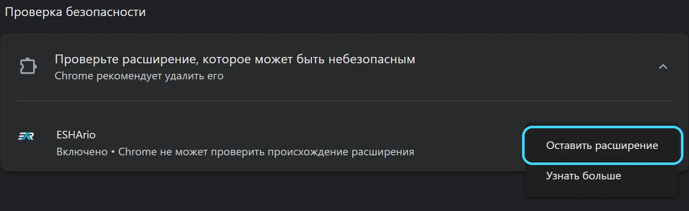
Как обновиться
ESHArio обновляется сам: новая версия приходит с нашего сервера при следующем открытии вебапа, качать ничего не нужно. Новый архив нужен редко, об этом скажет строка «Нужен новый архив» в шапке вебапа. Тогда:
- Скачайте новый архив с этой страницы.
- Распакуйте его в ту же папку и согласитесь заменить файлы.
- На chrome://extensions нажмите «Обновить».
- Обновите вкладку вебапа клавишей F5.
При удалении расширения замки карт решателя стираются, обновляйте поверх, не удаляя.
Настройки и вход при обновлении сохраняются.
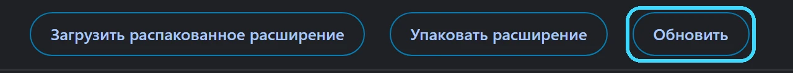
Не получилось? Напишите в Telegram или на почту support@eshario.com, поможем.
Установка: пять шагов
- 1
Поставьте Userscripts
Найдите в App Store «Userscripts» (автор Justin Wasack) и установите.
Откройте приложение один раз и закройте, иначе Safari не предложит скрипт.
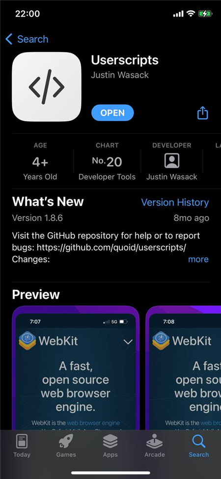
- 2
Включите его в Safari
Менеджер скриптов должен быть один. Stay или другой выключите здесь же.
«Настройки → Safari → Расширения», включите «Userscripts». В нём для «Other Websites» выберите «Allow».
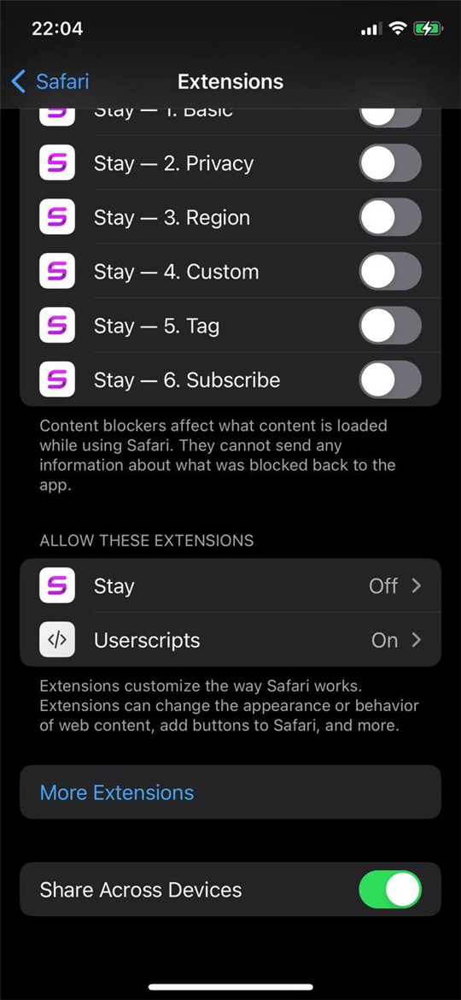
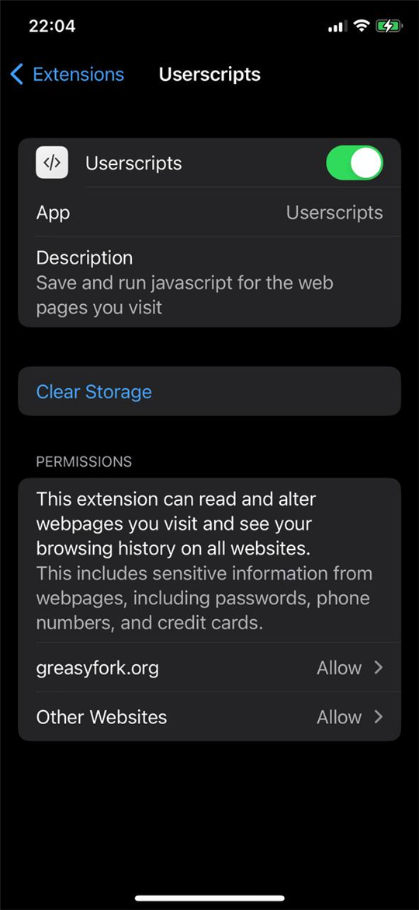
- 3
Установите ESHArio
Откройте eshario.com/ios в Safari на iPhone и нажмите кнопку ниже. Длинный текст скрипта это нормально.
Нажмите «aA» или значок пазла у адреса и выберите «Userscripts». Меню «…» справа Userscripts не показывает. В окне нажмите «Install», зелёная строка «Userscript Installed» значит, что готово.
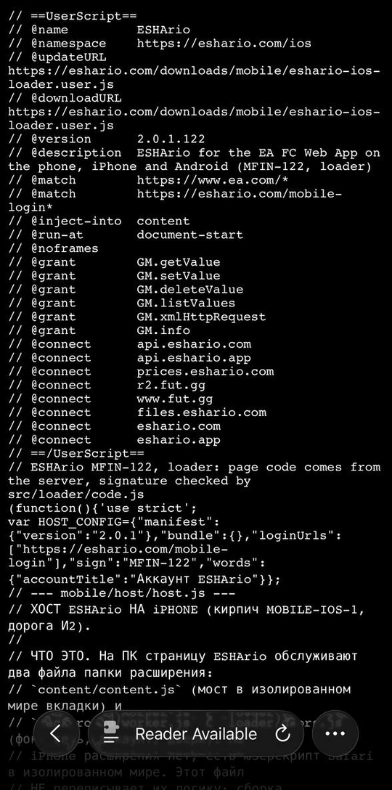
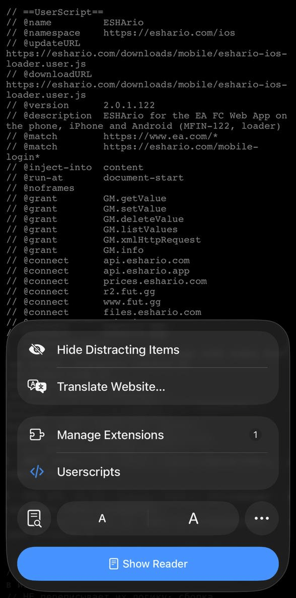
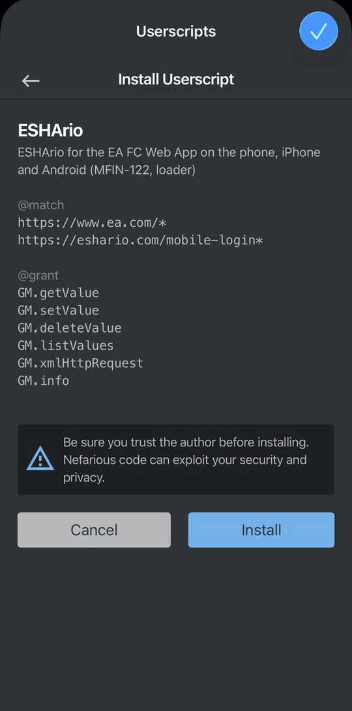
- 4
Откройте вебап
Откройте ea.com/ea-sports-fc/ultimate-team/web-app. Если ESHArio не появился за минуту, обновите страницу и проверьте меню «aA» или значок пазла, там должен быть «Userscripts».
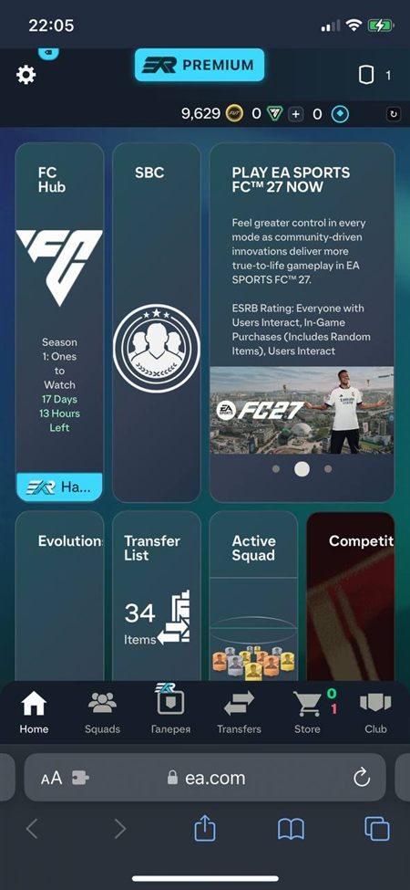
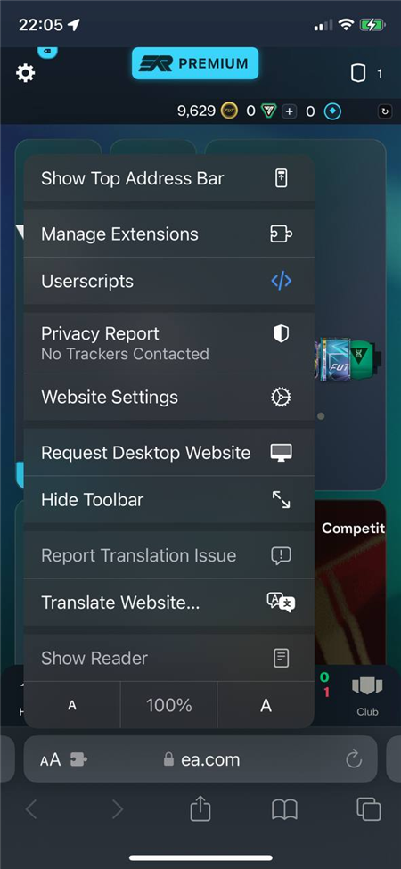
- 5
Войдите в аккаунт ESHArio
Нажмите «войти» в знаке ESHArio в шапке. Откроется eshario.com/mobile-login, введите почту и пароль и вернитесь в вебап. Доступ включится сам.
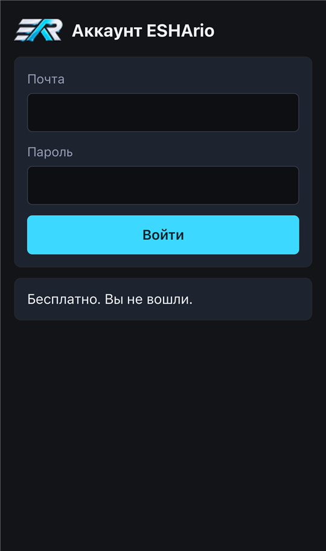
Полезно знать
ESHArio не появился
Подождите пятнадцать секунд и обновите страницу. Не помогло? В «Настройки → Safari → Расширения → Userscripts» для «ea.com» и «Other Websites» должно стоять «Allow». Если стоит, закройте Safari совсем, смахнув его из открытых приложений, и откройте снова.
Одна вкладка с вебапом
Держите вебап в одной вкладке и не копите много вкладок в Safari. Во второй вкладке ESHArio встанет на паузу, а лишние вкладки Safari выгружает из памяти.
Экран не гаснет при поиске
Пока ESHArio ищет карты на рынке, экран не гаснет. Если появится «Экран удержан, нажмите ещё», нажмите ещё раз.
Поиск на паузе
Если заблокировать телефон, уйти в другое приложение или ответить на звонок, поиск встанет на паузу. Вернитесь и нажмите «Продолжить».
Один компьютер и один телефон
ESHArio работает на одном компьютере и одном телефоне за раз. На втором телефоне знак в шапке покажет «Пауза». А сама EA держит вебап только на одном устройстве, вход на компьютере выкидывает телефон.
Не получилось? Напишите в Telegram или на почту support@eshario.com, поможем.
Установка: пять шагов
- 1
Поставьте Firefox
Установите браузер «Firefox» (Mozilla) из Google Play.
- 2
Добавьте Violentmonkey
Менеджер скриптов должен быть один. Из Tampermonkey или другого удалите ESHArio.
Откройте в Firefox addons.mozilla.org/android/addon/violentmonkey, нажмите «Добавить в Firefox», затем «Добавить».
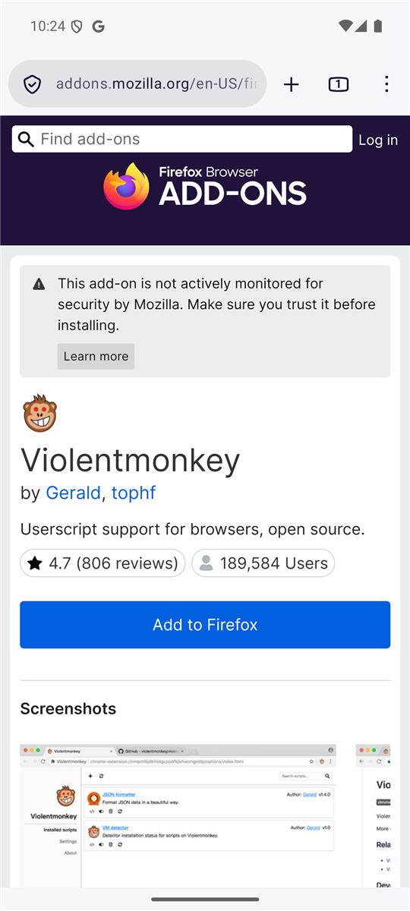
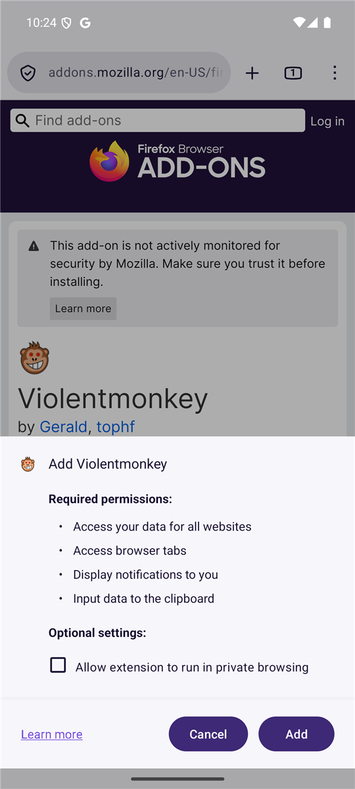
- 3
Установите ESHArio
Откройте eshario.com/android в Firefox на телефоне и нажмите кнопку ниже.
Нажмите «Установить». Строка «Скрипт установлен» значит, что готово.
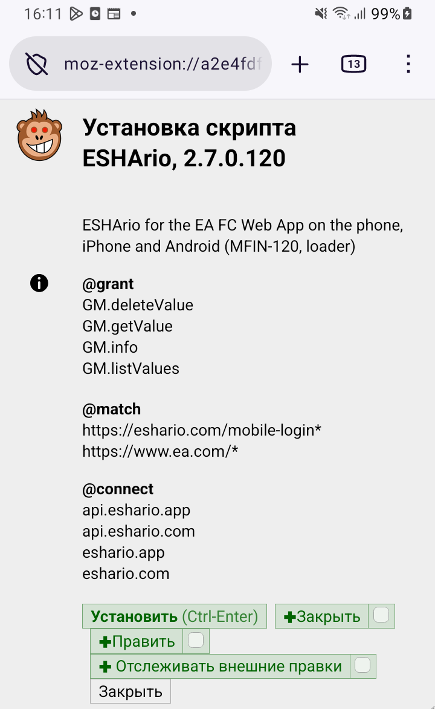
- 4
Откройте вебап
Откройте ea.com/ea-sports-fc/ultimate-team/web-app и войдите в EA. В первый раз подождите минуту и обновите страницу, ESHArio появится в шапке.
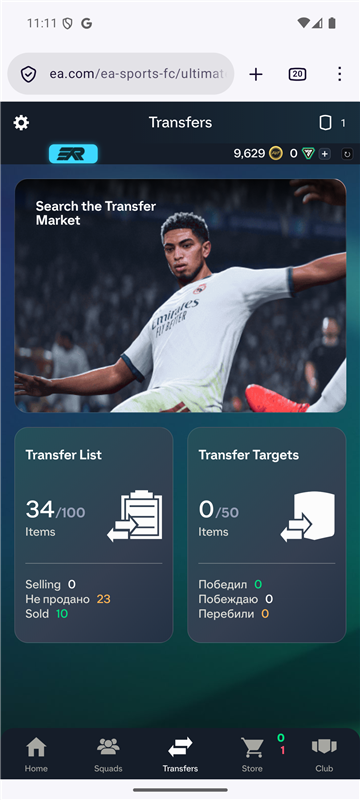
- 5
Войдите в аккаунт ESHArio
Нажмите «войти» на знаке ESHArio в строке монет. Откроется eshario.com/mobile-login, введите почту и пароль и вернитесь в вебап. Доступ включится сам.
Полезно знать
Одна вкладка с вебапом
Держите вебап единственной вкладкой Firefox. Во второй вкладке ESHArio встанет на паузу. На телефоне с 3 ГБ памяти Firefox может через несколько часов закрыть вкладку, тогда откройте вебап заново.
Кнопка «Назад» Android
Не нажимайте системную кнопку «Назад» в вебапе, Firefox уйдёт со страницы. Ходите стрелкой вебапа.
Окна Firefox после разблокировки
Иногда Firefox показывает свои окна, например «браузер по умолчанию» или «уведомления». Нажмите «Not now» или «Cancel», иначе нажатия до вебапа не дойдут.
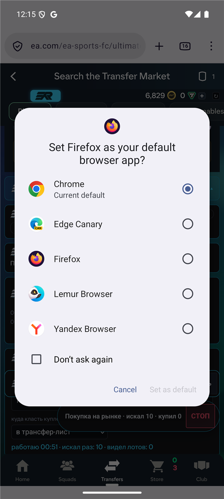
Экран не гаснет при поиске
Пока ESHArio ищет карты на рынке, экран не гаснет. Если появится «Экран удержан, нажмите ещё», нажмите ещё раз.
Поиск на паузе
Если заблокировать телефон или уйти в другое приложение, поиск встанет на паузу. Вернитесь и нажмите «Продолжить».
Один компьютер и один телефон
ESHArio работает на одном компьютере и одном телефоне за раз. На втором телефоне знак в шапке покажет «Пауза». А сама EA держит вебап только на одном устройстве, вход на компьютере выкидывает телефон.
Не получилось? Напишите в Telegram или на почту support@eshario.com, поможем.